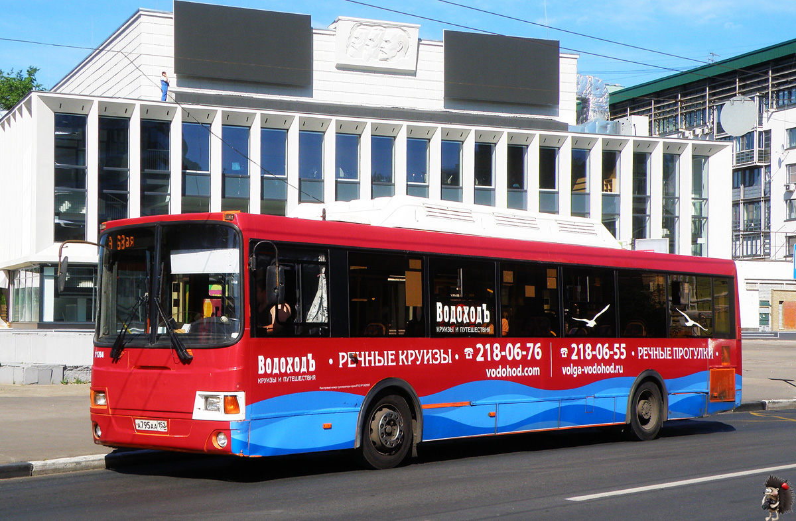

Единая площадка городской ориентации в малых исторических городах Нижегородской области
Узнать об области
Наши маршруты
Выбери свой маршрут!

ГОРОДЕЦ
Сегодня Городец – очень ухоженный, живописный волжский провинциальный город. В 1922 году Городец официально получил статус города.
Узнать подробнееСЕМЕНОВ
Семёнов — город областного значения.Городок Семенов на Нижегородской земле знаменит на весь мир. Его называют «столицей золотой хохломы».
Узнать подробнееСВЕТЛОЯР
Романтичнее и таинственней легендарного сюжета о славном граде Китеже трудновато отыскать пример из восточнославянской мифологии.
Узнать подробнееДИВЕЕВО
Наиболее распространённая версия гласит, что своё название село получило по имени первого владельца — Дивея.Здесь можно узнать много чего интересного
Узнать подробнееБОЛЬШОЕ БОЛДИНО
Надо сразу заметить, что путь к этому месту из Москвы весьма продолжителен. Его можно сократить на 40 км...если узнать от куда!
Узнать подробнееНАВАШИНО
Навашино - город на западе Нижегородской области с населением 15 тысяч, ближайший более крупный город - Муром.Вас может ждать здесь много чего нового.
Узнать подробнееВЫКСА
Город расположен недалеко от побережья Оки, в 28 км от железнодорожной станции в Навашино на магистральной железной дороге Москва — Екатеринбург.
Узнать подробнееДЗЕРЖИНСК
Дзержинск располагается в Нижегородской области и впервые упоминается в 1606 году, однако в то время его называли село Растяпино или Черное.Название родилось от речушки Черной.
Узнать подробнееАРЗАМАС
Своим появлением Арзамас обязан походам Ивана Грозного на Казанское и Астраханское ханства. Границы расширялись, их нужно было охранять.В первую очередь Арзамас – транспортный узел.
Узнать подробнее
Наши сервисы
Что вас ждёт в городах Нижегородской области
По всей области
В этом году в городах Нижегородской области принял всемирный банковский форум
Приключения
Встречая на своем пути разных людей, новые места и обстоятельства ты сможешь не просто расширить свой кругозор
еда & напитки
Актуальные рестораны\кафе и гостиницы , где туристы смогут отдохнуть и провести время
Доступные отели
Мини-отели дешевле, даже если находятся в центре города. В них есть возможность спокойно и без суеты отдохнуть
Наша галерея
Мы записываем воспоминания
Место для путешествий
АРЗАМАС
 Место для путешествий
Место для путешествий
ДЗЕРЖИНСК
Место для путешествий
ГОРОДЕЦ
Место для путешествий
ДИВЕЕВО
Место для путешествий
СЕМЕНОВ
 Место для путешествий
Место для путешествий
СВЕТЛОЯР
Место для путешествий
СЕМЕНОВ
Место для путешествийt
БОЛЬШОЕ БОЛДИНО

Место для путешествий
ВЫКСА
Программа для туристов
Выбери нас на карте!

Размещения согласно стандартной программе
размещение в выбранной категории каюты
трехразовое питание (завтрак, обед, ужин)
экскурсионное обслуживание согласно программе круиза!

Размещения согласно программе - Круиз Наш!
развлекательная программа
оздоровительная гимнастика и утренняя зарядка под руководством специалиста ЛФК
фиточай и кислородный коктейль (количество порций зависит от продолжительности рейса)
«Каникулы в Нижегородской области»
Речной круиз из Нижний Новгород по маршруту: Городец, Семенов, Светлояр, Дивеево, Большое Болдино, Навашино, Выкса,Дзержинск,Арзамас
Ты всегда можешь выбрать свой маршрут | Будь всегда с нами!